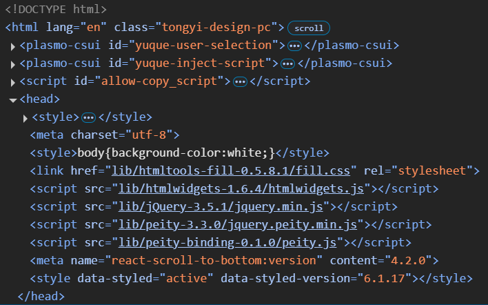
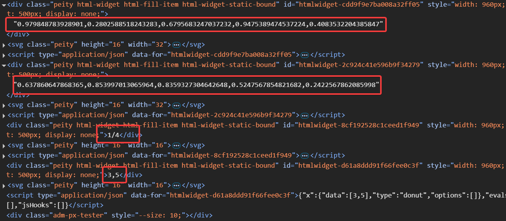

06 A Realistic Widget
本章我们创建一个名为peity的R包，它以peity.js为基础，创建内联图（类似小图标的东西）。
usethis::create_package("peity")
htmlwidgets::scaffoldWidget("peity")<!DOCTYPE html>
<html xmlns="http://www.w3.org/1999/xhtml" lang="" xml:lang="">
<head>
<!-- Import libraries -->
<script src="https://code.jquery.com/jquery-3.5.1.min.js"></script>
<script src="https://cdn.jsdelivr.net/npm/peity@3.3.0/jquery.peity.min.js"></script>
</head>
<body>
<!-- div to hold visualisation -->
<span id="bar">5,3,9,6,5,9,7,3,5,2</span>
<!-- Script to create visualisation -->
<script>
$("#bar").peity("bar");
</script>
</body>
</html>具体工作原理是：先加载JavaScript库，然后$("#bar").peity("bar")将span标签中的数据转换成图表。
Dependencies
创建好包和scaffold后，我们需要为包添加JavaScript依赖库。分别为上述两个依赖库peity.js和jQuery创建单独目录，并放置源文件，这样可以使包变得更加鲁棒。
dir.create("./inst/htmlwidgets/jquery")
dir.create("./inst/htmlwidgets/peity")
peity <- paste0(
"https://raw.githubusercontent.com/benpickles/",
"peity/master/jquery.peity.min.js"
)
jquery <- paste0(
"https://code.jquery.com/jquery-3.5.1.min.js"
)
download.file(
jquery, "./inst/htmlwidgets/jquery/jquery.min.js"
)
download.file(
peity, "./inst/htmlwidgets/peity/jquery.peity.min.js"
)完成后，R包目录下的结构大致如下：
.
├── DESCRIPTION
├── NAMESPACE
├── R
│ └── peity.R
└── inst
└── htmlwidgets
├── jquery
│ └── jquery.min.js
├── peity
│ └── jquery.peity.min.js
├── peity.js
└── peity.yaml配置依赖的文件为inst/htmlwidgets/peity.yaml文件，它的最开始几行是一个模板。
# (uncomment to add a dependency)
# dependencies:
# - name:
# version:
# src:
# script:
# stylesheet:正确添加依赖项：依赖性的顺序很重要，因为peity.js依赖jquery.js，所以它最后被添加。scr自动指向R包目录中的inst/文件夹。
dependencies:
- name: jQuery
version: 3.5.1
src: htmlwidgets/jquery
script: jquery.min.js
- name: peity
version: 3.3.0
src: htmlwidgets/peity
script: jquery.peity.min.js加载peity包，使用peity("test")函数生成测试网页，点击Rstudio中Viewer处的，使用浏览器工具，你可以看到在网页<head>处加载了jquery.min.js和jquery.peity.min.js
devtools::load_all()
system.file("htmlwidgets/peity", package = "peity")
#> "/home/me/packages/peity/inst/htmlwidgets/peity"
peity("test")
Implementation
peity.js的使用方法相对简单：piety函数应用到id = 'elementId'块，函数第一个参数使绘图类型，第二个参数是可选的JSON参数。
$("#elementId").peity("bar", {
fill: ["red", "green", "blue"]
})piety函数使用的数据不是由参数传入，而是由块提供：
<span id="elementId">5,3,9,6</span>那么，要想实现R调用JavaScript，我们需要R：
- 创建一个有数据的块，传递块给
peity函数。 - 传递
peity函数的参数。
上一章节中，我们讲到playground包会自动创建一个块，并传递message给块，最终显示在网页上；peity包同样：
peity(c(1,5,6,2))<div
id="htmlwidget-495cf47d1a2a4a56c851"
style="width:960px;height:500px;"
class="play html-widget">
1,5,6,2
</div>与message相同的传递方式，我们可以将数据和参数通过x对象进行传递。更新./R/peity.R文件中的函数，如下所示：
peity <- function(data, type = c("bar", "line", "pie", "donut"),
..., width = NULL, height = NULL, elementId = NULL) {
type <- match.arg(type)
# forward options using x
x = list(
data = data,
type = type,
options = list(...)
)
# create widget
htmlwidgets::createWidget(
name = 'peity',
x,
width = width,
height = height,
package = 'peity',
elementId = elementId
)
}与message相同的处理方式，在./inst/htmlwidgets/peity.js文件中，添加对传入的x对象处理，运行js中的peity函数。
renderValue: function(x) {
// insert data
el.innerText = x.data;
// run peity
// $("#" + el.id).peity(x.type, x.options)
$(el).peity(x.type, x.options)
}library(htmltools)
browsable(
tagList(
peity(runif(5)),
peity(runif(5), type = "line"),
peity("1/4", type = "pie", fill = c("#c6d9fd", "#4d89f9")),
peity(c(3,5), type = "donut")
)
)HTML Element
piety.js生成的图像用来插入到某行中，通常搭配<span>标签。如果你检查上例中html源码，会发现生成的图是被<div>标签包裹。

为了实现被<span>标签包裹，我们需要在./R/piety.R中定义一个函数，将<div>标签替换为<span>标签，示例如下：
peity_html <- function(...){
htmltools::tags$span(...)
}你可以重新加载函数，再次检查html源码中使用的标签。
函数名peity_html是一种固定的格式——widgetName_html。该函数会被htmlwidgets自动搜索，如果有就使用函数中的标签，如果没有就使用默认的<div>。参数...为固定参数，用来传递id,class,style等不确定参数。你也可以写出如下具有固定参数的格式。
myWidget_html <- function(..., class){
htmltools::tags$div(..., class = c(class, "my-class"))
}We can now 5,3,9,6,7 use peity 2, 1.8198638, 0.9582295, 0.2660590, 1.1532798 inline with text! 4,2
browsable(
tagList(
p(
"We can now", peity(runif(5)),
"use peity", peity(runif(5), type = "line"),
"inline with text!",
peity(c(4,2), type = "donut")
)
)
)